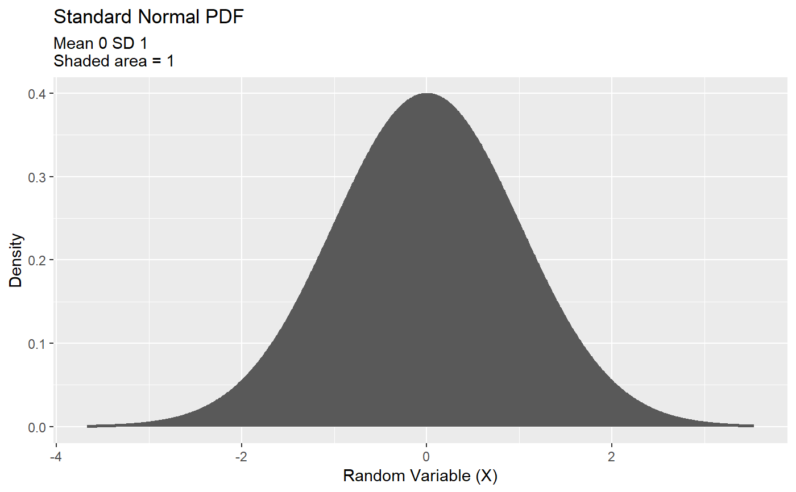
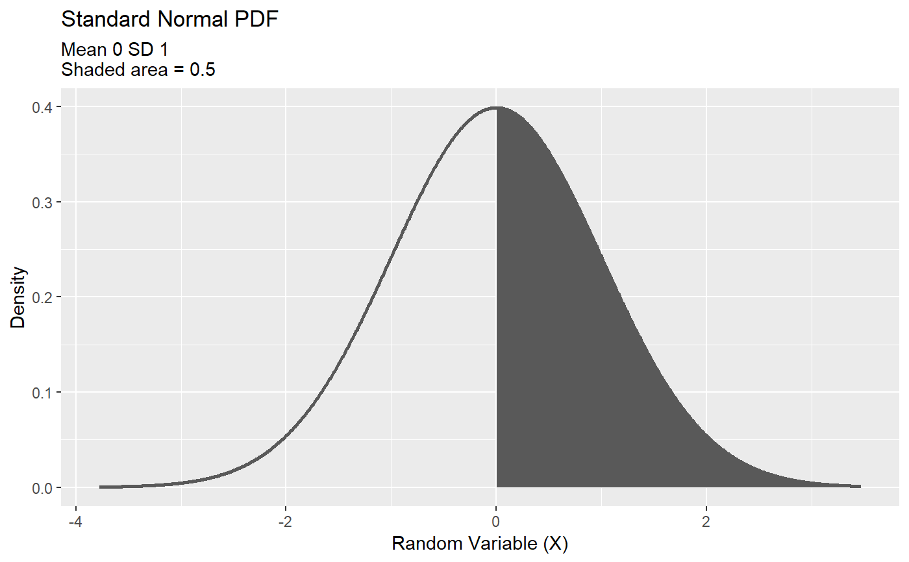
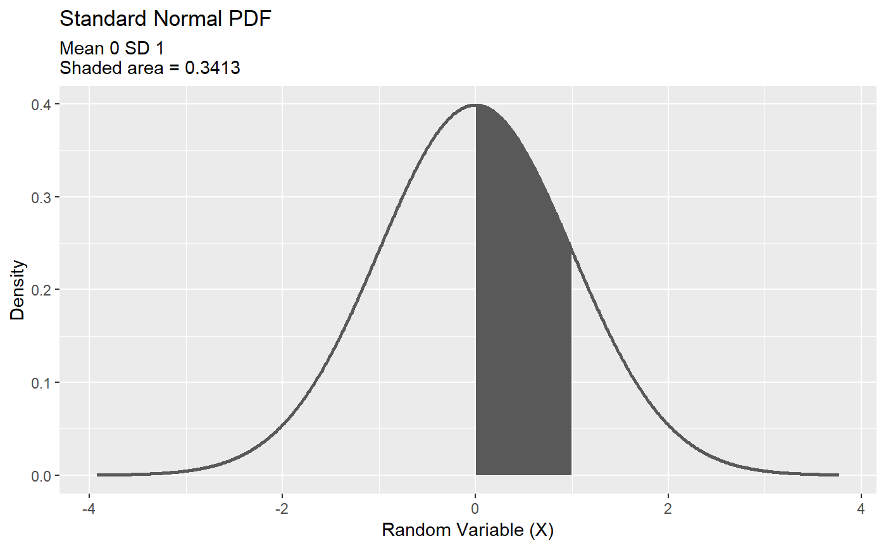
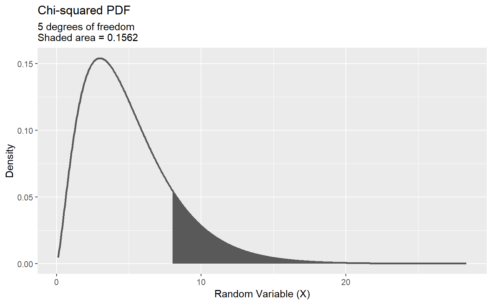

plot_probability.RdPlot probabilities as areas underneath the PDF
plot_probability( model, lower = NULL, upper = NULL, distribution = NULL, details = NULL, fill = "grey35", color = "grey35", alpha = 1, ... )
| model | one of R's built-in probability distributions (e.g., 'rnorm', 'rpois', 'runif'). |
|---|---|
| lower | lower bound of P(a <= x <= b), i.e. b. Defaults to NULL. |
| details | details about the distribution (e.g., mean and sd). Used in the plot subtitle(s). Defaults to NULL. |
| fill | fill color of the histogram or density. Defaults to "grey35" (the ggplot2 default) |
| alpha | transparency of the histogram or density. Defaults to 1 (no transparency) |
| ... | additional arguments passed to `model` (e.g. mean and sd for `rnorm`, lambda for `rpois`, etc.) |
| uppder | upper bound of P(a <= x <= b), i.e. a. Defaults to NULL. |
| density | plot the kernel density estimates instead of the histogram. Defaults to FALSE. |
| name | name of the distribution (a string). Used in the plot title(s). Defaults to NULL, in which case `model` is used in the plot title. |
ggplot object
Should this function merge with `plot_distribution()`?
Lawrence R. De Geest
# plot the standard normal and show the entire distribution sums to 1 plot_probability(model = 'rnorm', lower = -Inf, distribution = "Standard Normal", details = "Mean 0 SD 1")# ...and half the distribution sums to 0.5 plot_probability(model = 'rnorm', lower = 0, distribution = "Standard Normal", details = "Mean 0 SD 1")# show the area between 0 and 1 on the standard normal plot_probability(model = 'rnorm', lower = 0, upper =1, distribution = "Standard Normal", details = "Mean 0 SD 1")# Chi-squared distribution with 5 degrees of freedome plot_probability(model = 'rchisq', df = 5, lower = 8, distribution = "Chi-squared", details = "5 degrees of freedom")